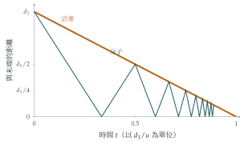

STEP I 2002，第 10 題
繼續之前，請先閱讀題目（原題為英文）。題目載於 STEP Support Programme 的題目資料庫： step.maths.org/questions/02-s1-q10
引子
替單車輪胎打氣時摸一摸氣泵：它會發熱。壓縮氣體會令氣體變暖，柴油引擎（單靠壓縮就能點燃燃料）、雪櫃以至恆星的形成，背後都是這個原理。但為甚麼壓縮會令氣體升溫？溫度就是分子的平均動能（kinetic energy），所以問題其實是：為甚麼分子會加速？
這道題目只用一個分子就回答了這個問題。分子每次從推進中的活塞（piston）反彈，都會多得一點速率，就像網球碰上揮動中的球拍一樣。把每次反彈準確地追蹤下去，便會發現一條隱藏的定律：分子的速率乘以氣缸的長度，幾乎保持不變。這就是一個絕熱不變量（adiabatic invariant），也是你在物理課遇到的氣體定律在微觀層面的來源。
動筆之前
一個以速率 \(w\) 運動的球，撞上一堵以速率 \(u\) 迎面移來的牆，並作彈性（elastic）反彈。反彈後球的速率是多少？（試在牆的參考系中思考。）
在牆的參考系（frame）中，球以 \(w + u\) 接近；由於它是從一個極重的物體上彈性反彈，所以亦以 \(w + u\) 離開。回到地面參考系，牆正以 \(u\) 朝着與反彈後的球相同的方向運動，所以球的速率是 \(w + 2u\)。每次從推進中的活塞反彈，速率都增加 \(2u\)。（從氣缸靜止的一端反彈，則甚麼也不會改變。）
逐步解題
階段 1 反彈 \(n\) 次後的速率
質點（particle）起初的速率是 \(v\)。每次與活塞碰撞（collision），速率增加 \(2u\)，而與末端碰撞則不會改變速率。所以與活塞碰撞 \(n\) 次之後， \[v_n = v + 2nu. \qed\]
階段 2 長度的遞推關係
在第 \(n\) 次與第 \((n+1)\) 次碰撞之間，質點由活塞走到末端再折返。它走了多遠？活塞又移動了多遠？
在時間 \(t_n\) 內，活塞移動了 \(ut_n\)，所以 \(d_n - d_{n+1} = ut_n\)。與此同時，質點以速率 \(v_n\) 由活塞走到末端（距離 \(d_n\)），再返回活塞（距離 \(d_{n+1}\)），所以 \(d_n + d_{n+1} = v_nt_n\)。把兩條方程相除，便可消去 \(t_n\)： \[\frac{d_n + d_{n+1}}{d_n - d_{n+1}} = \frac{v_n}{u}, \qquad\text{所以}\qquad d_{n+1}(v_n + u) = d_n(v_n - u).\] 代入 \(v_n = v + 2nu\)，得 \[d_{n+1} = \frac{v + (2n - 1)u}{v + (2n + 1)u}\,d_n. \qed\] 這就是所求的遞推關係（recurrence）。
階段 3 裂項相消
把 \(d_n\) 寫成 \(d_1\) 乘以 \(n - 1\) 個這樣的分數之積。哪些項會互相抵消？
\[d_n = d_1 \cdot \frac{v + u}{v + 3u}\cdot\frac{v + 3u}{v + 5u}\cdots\frac{v + (2n - 3)u}{v + (2n - 1)u} = \frac{v + u}{v + (2n - 1)u}\,d_1. \qed\] 每個分子都與前一個分母抵消，只剩下第一個分子和最後一個分母。
階段 4 \(v = u\) 的情況
這時 \(d_n = \frac{2u}{2nu}d_1 = \frac{d_1}{n}\)，而 \[ut_n = d_n - d_{n+1} = d_1\Bigl(\frac1n - \frac{1}{n + 1}\Bigr) = \frac{d_1}{n(n + 1)}. \qed\] 把這些加起來，\(u(t_1 + t_2 + \cdots) = d_1\bigl(1 - \frac12 + \frac12 - \frac13 + \cdots\bigr) = d_1\)：活塞在第一次碰撞後經過時間 \(d_1/u\) 到達氣缸末端，這正是理所當然的結果。在活塞到達之前，質點反彈了無限多次（圖 10.4.1）。

回顧
處理碰撞時轉換參考系。在活塞的參考系中，反彈再簡單不過。
兩條方程，消去未知量。質點與活塞在同一段時間內所走的距離，給出了一個不含 \(t_n\) 的遞推關係。
裂項相消（telescoping）。那個乘積一下子化簡了，正如 \(\frac{1}{n(n+1)}\) 之和一樣。
背後的數學
一個絕熱不變量
把速率乘以長度： \[v_n d_n = (v + 2nu)\cdot\frac{v + u}{v + (2n - 1)u}\,d_1 \approx (v + u)d_1\] 這在 \(n\) 很大時成立，在 \(u\) 遠小於 \(v\) 時亦然。所以 \[\text{速率} \times \text{長度} \approx \text{常數}.\] 如果活塞相對於分子移動得很慢，那麼無論活塞移動多遠，乘積 \(vd\) 都幾乎不變。像這樣在系統緩慢改變時幾乎保持不變的量，稱為絕熱不變量。一般而言，往復運動的絕熱不變量是 \(\oint p\,\mathrm{d}q\)，即動量（momentum）沿一個週期的積分；在這裏它就是 \(mv \times 2d\)。
從一個分子到一團氣體
由於 \(v \propto 1/d\)，動能 \(\frac12mv^2\) 與 \(1/d^2\) 成正比。對於由許多沿同一方向運動的分子組成的氣體，溫度與平均動能成正比，所以 \(T \propto 1/d^2\)：長度減半，溫度便變成四倍。在三維空間中，能量由三個運動方向分擔，而同樣的論證（費曼（Feynman）在他的Lectures中給出了這個論證）可推出單原子氣體（monatomic gas）的絕熱壓縮定律， \[TV^{2/3} = \text{常數}, \qquad\text{或等價地}\qquad pV^{5/3} = \text{常數}.\] 指數 \(\frac53\) 就是單原子氣體著名的比熱比（ratio of specific heats）\(\gamma\)。把單車氣泵內的空氣壓縮至原來體積的五分之一，如果做得夠快而且沒有熱量散失，其絕對溫度會升高至原來的 \(5^{0.4} \approx 1.9\) 倍（空氣分子有兩個原子，因而 \(\gamma = 1.4\)）：由 \(20^\circ\)C 升至約 \(280^\circ\)C。氣泵之所以沒有那麼熱，只是因為壓縮得慢，熱量又會散走。
1949 年，恩里科·費米（Enrico Fermi）提出，宇宙射線（cosmic rays）這些從太空而來、能量極高的粒子，其加速方式與本題的分子如出一轍：它們在星際氣體雲中運動的磁場上反覆反彈，每次獲得一點能量。現時認為，「費米加速」（Fermi acceleration）在超新星殘骸的激波處發生，粒子在那裏來回穿越激波，就像分子在活塞與牆壁之間往返一樣。絕熱不變量在量子力學的誕生中也扮演過一個角色：保羅·埃倫費斯特（Paul Ehrenfest）在 1916 年指出，被量子化的量必定是絕熱不變量，因為緩慢的改變不可能令系統在量子態之間躍遷。
思維技巧
當一個過程不斷重複時，把其中一個週期準確地描述出來，並寫下狀態怎樣由一個週期變到下一個週期。
這裏的狀態是每次碰撞時的一對量（速率，長度）。這個遞推關係可以精確地解出，而它的解揭示了一個近似守恆的量。在大學裏，同樣的方法（先考慮一個週期，然後得出遞推關係或「回歸映射」（return map））會用於軌道、振子，以及 第 8.7 節 的迭代映射。
延伸練習
不變量的精確形式。證明 \(v_nd_n - (v + u)d_1 = \frac{u(v + u)d_1}{v + (2n - 1)u}\)，並由此推出當 \(n \to \infty\) 時 \(v_nd_n \to (v + u)d_1\)。
把活塞拉出。設活塞改為以速率 \(u < v\) 向外抽出，把題目重做一次。證明質點會減速，並求 \(v_nd_n\)。（氣體膨脹時會冷卻。）
能量。在 \(v = u\) 的情況下，隨着活塞逼近末端，分子的速率會無止境地增長。求第 \(n\) 個週期內活塞所受的平均力（動量的改變除以 \(t_n\)），並證明它按 \(n^3\) 的速度增長。這說明了把活塞一直推到盡頭所需的功有甚麼特點？
彈跳的球。一個球在重力作用下於地板上作彈性彈跳，而地板被緩慢地升高。試猜出這個運動的一個絕熱不變量。（提示：與 \(vd\) 相對應的量是平均速率乘以彈跳的高度，或等價地，能量乘以兩次彈跳之間的時間。）
延伸閱讀
Richard Feynman, Robert Leighton & Matthew Sands, The Feynman Lectures on Physics, Vol. I（《費曼物理學講義》第一卷，可在網上免費閱讀），第 39 章「The kinetic theory of gases」（氣體動力論）。同一個活塞論證，並推廣至三維。
Stephen Blundell & Katherine Blundell, Concepts in Thermal Physics（Oxford University Press）。大學一年級程度的絕熱過程與氣體動力論。
Lev Landau & Evgeny Lifshitz, Mechanics（Butterworth-Heinemann），§49。對絕熱不變量的精簡論述，留待日後閱讀。